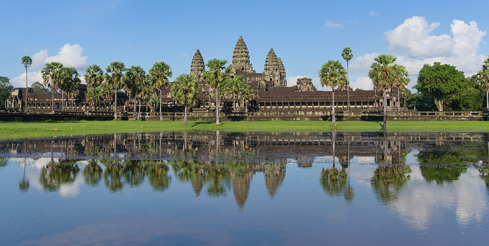

.jpg){kind=link}
Angkor Wat’s moated enclosure and the Greater Angkor catchment ↗
Figures 1–4 chart the upland-to-lake setting and use lidar to map the western approach, settlement grid, moat and nearby hydraulic features.
Deep dives / Asia
From Angkor Wat’s western approach, the moat gives the temple a clear edge. The city around it was much harder to draw. Reservoirs, roads, canals and residential mounds tie the sanctuary to other capitals and to farming settlements across a broad plain. The map follows that plain from the Kulen uplands to the lake and compares the temple precinct with the region that sustained it.
The guide covers Angkor Wat’s architecture and occupation, the succession of Khmer urban centers, and how people organized and adapted the water network from the early Angkorian period into the centuries after the royal court shifted away.

Approximate locations from the Phnom Kulen uplands to the northern Tonlé Sap floodplain, including the temple core, major reservoirs, early capitals and modern Siem Reap. Further canals, quarries and roads are shown in the linked archaeological maps.
Early to mid-12th century CE
Suryavarman II’s state temple originally honored Vishnu and later became a Buddhist sanctuary. [4] [14]
13.41°, 103.87°Angkorian period and later work
The approach crosses the western moat and leads through a gateway into the outer enclosure. [4] [9]
13.41°, 103.86°12th–13th centuries CE, with later reuse
This approximate point represents part of the enclosure’s grid of mounds and depressions. Excavation on sampled mounds identified periods of domestic activity. [13] [9]
13.41°, 103.87°Late 12th–early 13th centuries CE
Jayavarman VII’s walled capital centers on the Bayon, with a broad moat outside the gates. [3] [1] [18]
13.44°, 103.86°11th century CE
A shrine was built on an island at the center of Angkor’s great western reservoir. [6] [11]
13.43°, 103.80°East Mebon dedicated in 953 CE
A former island temple marks the middle of an immense reservoir whose embankments outlasted its open water. [7] [11]
13.45°, 103.92°Late 12th century CE
An island shrine and pools occupy the northern reservoir of the Preah Khan complex. [5] [11] [8]
13.46°, 103.89°Late 12th century CE
The temple’s inscription records provisions and duties supporting a royal religious foundation near the northern baray. [1] [14] [5]
13.46°, 103.87°Late 12th century CE
Temple inscriptions and excavations around Ta Prohm give different views of how a royal foundation was supplied and inhabited. [1] [14] [5]
13.44°, 103.89°Late 9th century CE
Bakong’s temple mountain was part of Hariharalaya, an early royal center linked to the Indratataka reservoir. [3] [2] [5]
13.34°, 103.97°Dedicated 967 CE
The carved sandstone temple lies on the northern plain, away from Angkor Wat and the central barays. [3] [2] [9]
13.60°, 103.96°Late 8th–early 9th centuries CE
Laser scanning and fieldwork have traced an early planned capital on the plateau. Quarries distributed along the southeastern foothills later supplied stone for temples on the plain. [16] [15]
13.61°, 104.11°Modern context
The modern city lies south of Angkor Wat on the river corridor that leads to Tonlé Sap. [2] [10]
13.36°, 103.86°Late 9th–early 10th centuries CE
This lakeward temple hill marks the edge of the Angkor plain above the Tonlé Sap flood zone. [5] [9]
13.29°, 103.81°Landscape context
The lake and low floodplain receive water moving south through the Angkor landscape. The shore shifts with the seasons. [10] [11]
13.25°, 103.81°Greater Angkor grew through successive royal building projects. An early center on Phnom Kulen occupied a planned grid on the plateau. At Hariharalaya, near modern Roluos, the Bakong temple and Indratataka reservoir belonged to a different center on the plain. Angkor Wat and the walled city of Angkor Thom were built centuries later and close to one another. Their concentration near the great barays reflects a long history of construction and adaptation. [16] [5] [10]
| Date | Place or change | Evidence | Sources |
|---|---|---|---|
| Late 8th–9th centuries CE | Mahendraparvata and Hariharalaya. | Lidar, surveys and excavations map the Kulen capital and the early royal landscape around Roluos. | [16] [5] |
| Late 9th–11th centuries CE | New royal centers and expansion of the reservoir system. | East Mebon was dedicated in 953, while West Mebon belongs to the 11th century. | [7] [6] [5] |
| Early to mid-12th century CE | Suryavarman II builds Angkor Wat. | The architecture and reliefs preserve the major construction program, with some additions carved centuries later. | [4] [9] |
| Late 12th–early 13th centuries CE | Angkor Thom and new royal Buddhist foundations. | Jayavarman VII’s projects included the Bayon, Ta Prohm and Preah Khan. | [3] [5] |
| 14th–15th centuries CE | Land use changes across Angkor. | Sediments show declining activity around Angkor Thom. Dates from Angkor Wat’s mounds show a separate pattern of renewed occupation. | [18] [13] |
| 16th century CE | New reliefs and Buddhist use at Angkor Wat. | Work on the northeast galleries and changes to the central sanctuary document later religious investment. | [4] [14] |
| 1992 CE | Angkor inscribed on the World Heritage List. | The property has components at Angkor, Roluos and Banteay Srei. | [1] [2] |
A visitor coming from the west crosses the moat, passes the outer gateway and approaches successive galleries and towers that rise toward the central sanctuary. Carved narratives occupy the gallery walls. The eastern gallery’s Churning of the Ocean of Milk makes Vishnu’s role visible in the building itself, while reliefs added to other galleries in the sixteenth century record later patrons and craftspeople at work. [4] [9]
Airborne laser scanning revealed a grid of low mounds and depressions inside the moat. Excavations recovered pottery and other traces of domestic use from sampled mounds. These traces give the enclosure a residential history alongside its architectural one. People associated with the temple probably lived there, but the households’ identities and duties are mostly unknown. [13] [9]
Angkor’s sandstone blocks link the monumental core to the foothills southeast of Phnom Kulen. Researchers compared properties of stone in temples and quarries and mapped traces of canals and rivers connecting the areas. The proposed transport route shows how water could move building materials as well as sustain communities. Its traces give a clearer picture of the scale of coordination than of the experience of particular work crews. [15] [16]
At Ta Prohm and Preah Khan, dedicatory inscriptions record people and supplies assigned to temple service. Such lists describe the reach of royal religious institutions, and people named or counted in them did not necessarily all live inside the walls. Charred plant remains from excavations show that people using the precincts handled a variety of plants alongside rice. Written and excavated records capture different parts of the work of feeding a temple community. [14] [13]
Canals and embankments tapped streams coming from the uplands, delivered water to reservoirs, and diverted surpluses toward the lake. The East and West Baray contained island shrines, and the East Baray’s documented inlet and outlet also point to practical water control. The functions of individual channels could change. Flexibility in flood control and storage is easier to demonstrate for the network as a whole than a fixed irrigation purpose for every feature. [11] [10] [7]
Village temples, small ponds, house mounds and fields spread beyond the formal core. Archaeologists have used their distribution to explore how local water management and royal construction coexisted and changed over time. Population estimates combine mapped house mounds and other evidence with assumptions about dating and household size. The resulting models make the density contrast legible, while leaving room for revision as more sites are excavated. [10] [12] [19]
Flood erosion and channel deposits support the idea that climate variability strained an interconnected system. Network modeling shows how intensified flows could worsen erosion and redistribute water, but chronology from Angkor Thom sediments also indicates declining land use during the fourteenth century, before the fifteenth-century events often used to mark Angkor’s fall. At Angkor Wat, radiocarbon dates show renewed occupation of parts of the enclosure around the late fourteenth or early fifteenth century. The court’s relocation, hydraulic deterioration and local religious or residential continuity each need to be dated on their own evidence. [17] [18] [13]
Open the source maps for their original detail, legends and dates. Their coverage and reproduction terms belong to the issuing institution.
Figures 1–4 chart the upland-to-lake setting and use lidar to map the western approach, settlement grid, moat and nearby hydraulic features.
The Greater Angkor Project’s archaeological map shows reservoirs, channels, roads and dispersed settlement evidence across the wider plain.
The Cambodian site authority’s report to UNESCO includes network diagrams and detailed plans of repair and water-management sites.
Open this era on global Explore ↗ Open Asia atlas ↗ Climate, sea level & ice-sheet context ↗
Sources checked and linked above; geological and historical dating methods follow the primary papers.